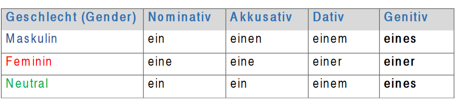

The genitive case – Der Genetiv
The genitive case – Der Genetiv We use genitive to show possession as the word ‘of’ in English or by adding an apostrophe ‘s’, e.g.: the kid’s toy.
Beispiel (example):
Das ist das Spielzeug des Kindes (This is the child's toy)
Here the toy belongs to the kid. When we ask about the possession, we use the question word ‘wessen’ (whose).
Beispiel: Wessen Spielzeug ist das? (Whose toy is this?)
In spoken German, we do not often use Genitive. To avoid genitive, you can use the preposition ‘von + Dativ’ which is similar to the word ‘of in English’ e.g. Das Spielzeug von dem Kind.
Definiter Artikel im Genitiv (definite articles in the genitive case)
Indefiniter Artikel im Genitiv (indefinite articles in the genitive case)

In masculine and neuter we add an ending ‘-es’ to the nouns with one syllable (der Mann → des Mannes)
And only ‘ -s’ to nouns with two syllables or more (der Computer → des Computers).
We also use genitive after certain prepositions. e.g
 Wegen (because), während (during), trotz (despite), außerhalb
(outside).
Wegen (because), während (during), trotz (despite), außerhalb
(outside).
Sie wohnen außerhalb der Stadt. (He lives outside the city)
Ich bliebe wegen des schlechten Wetters zu Hause.
(I stayed home because of the bad weather.)
Übung (exercise):
Bilden Sie den Genitiv wie im Beispiel unten.
Form the genitive as in the example below.
Beispiel:
Das Auto/ die Eltern
- Das Fenster/ das Haus
- Das Futter/ die Katze
- Das Kleid/ das Mädchen
- Das Buch/ die Studentin
- Die Strahlen/ die Sonne
Das Auto der Eltern
- -------------------------
- -------------------------
- -------------------------
- -------------------------